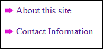
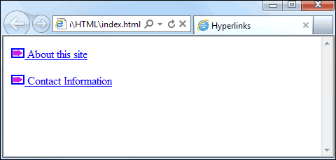

Other Types of Hyperlinks
Bookmark Hyperlinks
A bookmark link (commonly called an Anchor link) is useful when your web page is rather long, and users have to scroll down to read it all. You can insert Bookmark links to aid navigation. When users click on your links, they will jump to different section of your web pages. You can even use a bookmark link to jump to a different web page, and back to the same spot where they left.
There are two parts to the bookmark: The clickable link itself, and the place where you want to jump to.
The place where you want to jump to, the destination for the click, again uses the <A> tag. This time, the added attribute is not HREF but ID (it used to be NAME in previous versions of HTML). You then surround some text or image with the tag. Like this:
<A ID = "section1">In</a> this first section, we'll discuss Links
We've surrounded the word "In" with our destination bookmark. The name of the ID itself, the part after the equal sign, can be anything you like. But you'll use that ID in the Link part of the bookmark. Here's the actual link, the part people see and click on.
<A HREF = "#section1">Click here for Section One</A>
Note that we're back to the HREF attribute. This time, after the equal sign, there is a hash/pound symbol ( # ). After the hash symbol you type the ID you used in step one. You then type the text that people will click on. Finally, you close the tag with </A>.
You can add a bookmark to another web page, if you like. In which case, the link would be this:
<A HREF = "page2.html#section2">Click here for Section Two</A>
Note where the hash symbol is now - after the name of a web page. The ID of the destination bookmark follows the hash symbol. There is no space between the two.
The destination link itself would then go somewhere on page2.html. If you had another bookmark on page two, you could have the user jump back to the same spot where they left.
Email Links
An email link can be added to web pages, too. When people click on this email link, their Email software will start up. In the "To" box of the email software, your email address will appear. The code for an email link is this:
<A HREF = "MailTo:online@homeandlearn.co.uk">Email us</A>
Notice that the link is the HREF type. After the equals sign you have this:
Mailto:
Mailto is all one word, and is followed by a colon. Then you put your email address after the colon, without typing a space. You then type a right angle bracket ( > ) before typing the text you want people to click on to send you an email. The Anchor closing tag </A> finishes it all off.
And that's it for email address - quite simple!
Try the email code out in a web page, save your work and see what happens when you view the web page and click the email link.
There is, however, a big danger to using an email link in your web pages: spammers have written programmes called "bots" to crawl the internet looking for MailTo. If the "bot" finds it, your email address will be harvested. In short, it's better not to use the email tag. Much better is to use scripting for your email addresses. For example, he's some JavaScript that does the job better, as the spammers' automated "bots" can't read it:
<SCRIPT LANGUAGE="JavaScript" type="text/javascript">
document.write("<P></P><Center><H1>Contact Me</H1></Center>")
document.write("<P align = Center>Click below
to send me an email</P>")
var atSign = "@"
var firstPart = "onl"
var ispP1 = "ine"
var ispP2 = "homeand"
var ispP3 = "learn.co.uk"
var wholeAddress = firstPart + ispP1 + atSign + ispP2 + ispP3
var mToPart1 = "mai"
var mToPart2 = "lto:"
var mt = mToPart1 + mToPart2
var hrefP1 = "<a href= " + mt + wholeAddress + ">Click
here to email me</a>"
document.write("<Center>" + hrefP1 + "</Center>")
</SCRIPT>
You don't need to be able to understand all of the above code. But notice how the email address is chopped into pieces with these lines:
var atSign = "@"
var firstPart = "onl"
var ispP1 = "ine"
var ispP2 = "homeand"
var ispP3 = "learn.co.uk"
The address is them reassembled later and written out.
Links to other files (Word documents, ZIP files, PDFs, etc)
You can place a link on your web page to files other than images and web pages. A link can be made to all sorts of different file types. For example, if you have PDF file that you want to share with others, the code would be this:
<A HREF = "MyPDF.pdf">Download my PDF</A>
When the link is clicked on, the browser will see the file extension .pdf and try to open it up. You can have the document open up in a new window by adding TARGET="_blank" to the A HREF code, just like you did above.
You don't have to add anything special to have people download files like PDFs, or Word documents, or zipped files. Just a normal link with the name of the file after the HREF part will do it.
Images as Links
You can turn images into hyperlinks. The only thing you need to do is surround your image with an A HREF tag. Like this:
<A HREF="pages/about.html">
<IMG SRC="nav_icon.gif"> About this site
</A>
The result would be this, in the Firefox web browser:

However, Internet Explorer will display the icon like this:

The icons now have a blue rectangle around them. This is because they are hyperlinks first and images second. To get rid of the blue rectangle you can add this to the IMG tag:
<A HREF="pages/about.html">
<IMG SRC="nav_icon.gif" BORDER="0"> About this site
</A>
So we've set the BORDER attribute to zero. This gets rid of the blue rectangle in Internet Explorer.
In the next lesson, you'll learn about CSS and hyperlinks.